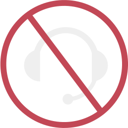
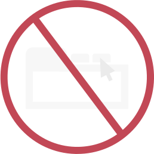

Recording Requirements
done Sound Input at Max

done Latest Chrome Version
done No external Mic

done 80cm away from screen
done Imagine Audience
done No Switching Tabs

Your Recording
It will be on while you record
Configuration
Make sure You are appropriately recognized by the computer!
VOLUME
PITCH
--Hz
TRANSCRIPT